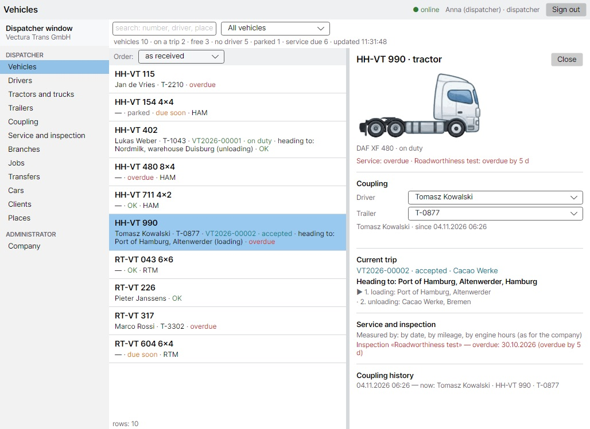
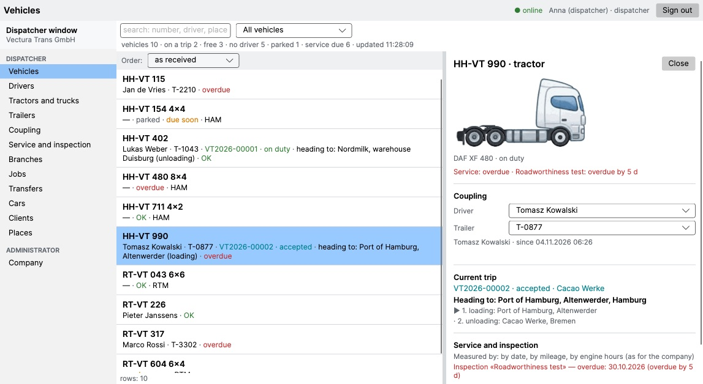
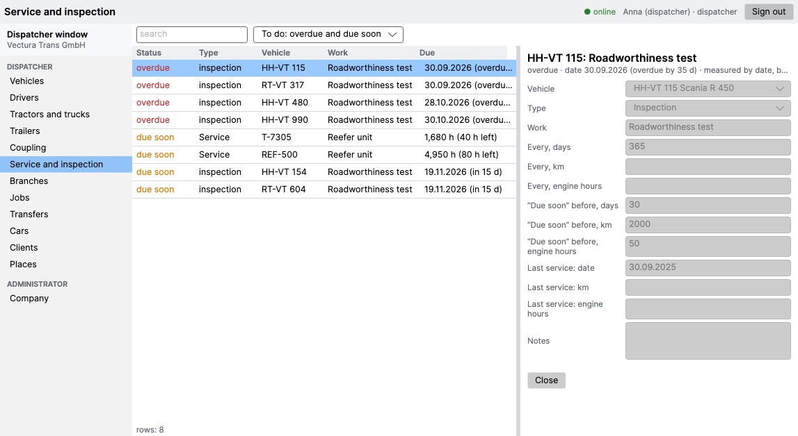
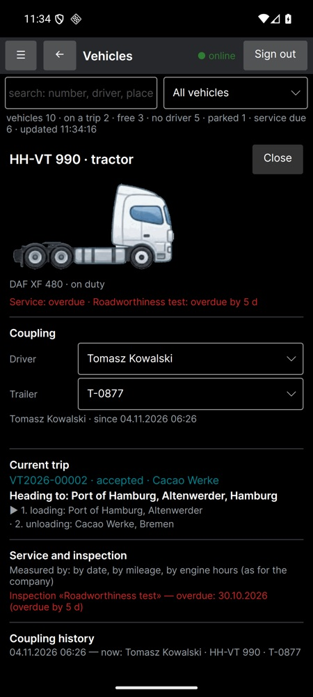

Your company's own server, a dispatcher window and the driver's VecturaBook app working together. Drivers, trucks, trailers, couplings, trips, branches, service and deadlines — in one place, on your own computers.
Write to usRuns on your own computer or server — Windows or Linux. The data stays inside the company, not in someone else's cloud.
One program for the office and the road: Windows, Mac and Android. Live list of trucks, who drives what and where it is going.
Who is working and who is not, which truck and trailer each driver has now, and the history of who drove what.
Tractors, rigid trucks and cars. The picture is drawn by the real wheel layout (4×2, 6×4, 8×4…), with mileage and engine hours.
Every trailer by axles and body: where it stands, which truck it is coupled to, what is due on it.
Driver + truck + trailer as one unit. Re-couple on the fly; every change is kept in the history.
Jobs with loading and unloading points. The driver's status comes from the phone: accepted, on the way, unloaded.
Each branch works with its own trucks and people; other branches are visible read-only.
Service and inspection by date, kilometres or engine hours. Overdue goes first, “due soon” is warned in advance.
VecturaBook Pro is finished for the work of a specific company: your cargo types, your documents, your rules for drivers and branches. What you need is added; what you don't need is not in the way.
Sections, fields, wording, order of columns and the look of the window can be changed for you. The screenshots below are the starting point, not a fixed form.
Drivers, trucks, trailers, deadlines and history are moved from your previous system — Excel tables, an old program or a database. You start with your own data, not an empty screen.
Screenshots of the current version on demo data. The interface is adjusted for each client — what you see here is changed to fit your company.




Tell us how many trucks and branches you have and what you work in now. We will answer by e-mail.
germormdev@gmail.com